Work in progress
Ava: Turning Text into Synth Presets
Building a differentiable synthesizer and teaching a neural network to control it.
What if, instead of endlessly scrolling through synthesizer presets, you could simply describe the sound you wanted?
Ava is my attempt to make that possible: a subtractive synthesizer that turns text descriptions into editable presets. Under the hood, I built a differentiable synthesizer in PyTorch and trained a small neural network to predict its parameters from audio. I then used a pretrained text-to-audio model to generate training data, and brought everything together in a C++ plugin.
In this post, I'll walk through how I built it, the experiments that worked (and those that didn't), and some interactive demos you can play with yourself.
A Quick Listen
Before getting into the technical details, here's a taste of what Ava can do. For each text description, you can compare the generated reference audio with Ava's attempt to reproduce it using a synthesizer preset.
You'll find more examples and a playable synth further down the page.
Lo-fi piano
D♯5“a warm lo-fi piano with a soft muted touch, gently swelling.”
Generated reference
Ava
Full prompt
A single isolated bass-inspired subtractive synthesizer note at D♯5 (MIDI 45, 110.00 Hz). Desired timbre: a warm lo-fi piano with a soft muted touch, gently swelling. Dry and monophonic, triggered once, within a 6-second clip.
Concert flute
G♯4“a clear bright concert flute with a smooth flowing tone, gently wavering.”
Generated reference
Ava
Full prompt
A single isolated flute-inspired subtractive synthesizer note at G#4 (MIDI 68, 415.30 Hz). Desired timbre: a clear bright concert flute with a smooth flowing tone, gently wavering. Dry and monophonic, triggered once, within a 6-second clip.
1. Preamble
A few years ago, I got into music production as a hobby. I spent quite some time learning about sound design, although I never became particularly good at it. My usual workflow went something like this: I'd have a sound in mind, try to recreate it on my favorite synthesizer, fail, and start scrolling endlessly through presets. I'd find plenty of interesting sounds, but rarely the one I was looking for. Eventually, I'd get distracted, forget my original idea, and give up.
Around the same time, I became curious about how synthesizers actually worked. I started reading The Audio Programmer's book on building synthesizer plugins, and realized that much of a synthesizer is essentially a sequence of mathematical operations on audio signals, many of which can be made differentiable.
That got me thinking: what if I implemented a synthesizer in PyTorch, and used backpropagation to learn its parameters?
The original idea was sound-to-synth: given an audio sample, a neural network would predict the synthesizer parameters needed to reproduce it. By rendering audio through a differentiable synth and comparing it with the original, we could train the network end-to-end, using the synthesizer itself as the decoder.
But then I realized this wasn't quite the problem I wanted to solve. How often do you have a recording of the exact sound you're imagining? Most of the time, you can at least try to describe it: a warm, slightly detuned pad with a slow attack, or a bright, punchy pluck. And even if the result isn't perfect, having a reasonably close preset to start tweaking would already make sound design much easier.
So the idea evolved into text-to-synth. I initially considered using a joint audio-text embedding model like CLAP[1], but eventually decided to use pretrained text-to-audio models to generate paired training data.
Most of the project was developed on my MacBook M1 Pro, with A100 GPUs for the more expensive experiments.
And why Ava? It's named after the robot protagonist of Ex Machina, the movie that inspired me to study AI many years ago.
2. The Synth
For this project, I wanted something relatively simple, but still expressive enough to generate a good variety of sounds. So I went with a subtractive synthesizer: a synthesizer that starts with one or more waveforms and shapes the resulting sound using filters, envelopes, and modulation.
Ava follows a fairly standard architecture, illustrated in the interactive diagram below. You can click on each component to see what it does.
Oscillator A
A sine, triangle, square or sawtooth wave at the played note's pitch.
Oscillator B
The same four waveform choices, with a detuning offset relative to oscillator A.
Oscillator mix
The mix parameter crossfades between the two oscillators.
noise
Noise blend
Noise mix blends white noise into the oscillator signal before filtering.
Resonant low-pass
Cutoff controls brightness; resonance emphasizes frequencies near the cutoff. The cutoff follows the played pitch. The LFO moves it over time, with its rate and depth setting the speed and amount.
rate, depth
Drive
Soft distortion adds harmonic content before the amplitude envelope is applied.
ADSR envelope
Attack, decay and sustain shape the held note's amplitude. Note-off starts the release.
Output gain
Gain sets the preset's level. MIDI velocity also scales each note's amplitude, independently of the predicted preset.
The synth combines two oscillators, optionally mixed with white noise, and passes the signal through a resonant low-pass filter, drive, an ADSR envelope, and output gain. An LFO can also modulate the filter cutoff. The neural network predicts the controls for these components, including waveform selection, detuning, filter settings, and envelope parameters.
One important design decision was to exclude pitch and velocity from the predicted parameters. These are normally provided through MIDI, independently of the synth preset. Besides, estimating pitch from audio is already a challenging problem on its own, and I didn't want the model to have to solve both tasks simultaneously.
Instead, the network predicts only the preset parameters, while the synth receives pitch, velocity, and note timing separately. This simplifies the learning problem, although it also means we need the corresponding MIDI information for each training sample. We'll see later how I handled that.
I intentionally kept the synthesis engine fairly limited. The goal wasn't to build a competitor to commercial synthesizers, but to see how much we could achieve with a simple synth controlled by a neural network.
Deep Dive: Differentiable Synthesis in PyTorchOptional · open to read
The idea behind this project is to use a synthesizer as a differentiable decoder. Given a set of preset parameters \theta and MIDI information m, the synth produces a waveform:
Here, \theta and m are inputs to the synth; the synthesizer itself has no trainable weights. It's a collection of signal-processing operations, but by implementing them in PyTorch, we can propagate gradients through the entire signal chain.
We can use these gradients to optimize the parameters of a single sound directly, or train a neural network to predict them from audio. Most synth operations are straightforward to differentiate, but some, particularly waveform selection and recursive filtering, require a bit more care.
Oscillators and waveform selection
Let's start with the oscillators. Each produces a periodic waveform at a frequency determined by the MIDI pitch. Ava supports sine, triangle, square, and sawtooth waves.
The simplest is a sine wave:
where f is the frequency in hertz and t is time in seconds.
To generate digital audio, we evaluate this function at discrete time steps. At a sample rate of 24 kHz, we take 24,000 samples per second, so consecutive samples are separated by 1/24000 seconds.
For a recording containing N samples, the time vector is:
where f_s is the sample rate.
From synth/synth.py, with explanatory comments
# Sample indices 0, 1, ..., N-1 become times in seconds after division.
time = torch.arange(round(duration * self.sample_rate),
device=freq.device, dtype=torch.float32) / self.sample_rateWe can then generate the sine wave by evaluating the equation at every time step:
From synth/oscillators/sine.py, with explanatory comments
def __call__(self, freq, time):
# freq: [batch, 1]; time: [samples].
# Broadcasting evaluates every time point at each batch element's frequency.
# 2*pi*freq*time is the phase in radians; initial phase is zero.
return torch.sin(2 * torch.pi * freq * time) # [batch, samples]Multiplying time by frequency gives the number of completed cycles, while multiplying by 2\pi converts that into radians. At 200 Hz and 24 kHz, each cycle takes 120 samples.
PyTorch broadcasting also lets us generate several waveforms at different frequencies in parallel, using the same time vector.
Building more complex waveforms
Square, triangle, and sawtooth waves can be constructed by adding sine waves at multiples of the fundamental frequency, known as harmonics.
For example, a square wave contains only odd harmonics, with amplitudes decreasing inversely with their harmonic number:
Starting with a sine wave, adding the third harmonic begins to flatten the peaks. Adding the fifth, seventh, and subsequent odd harmonics makes the transitions progressively sharper, approaching the familiar square-wave shape.
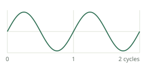
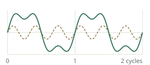
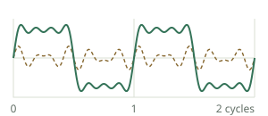
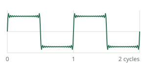
In Ava, the square and triangle oscillators use odd harmonics up to the 31st, while the sawtooth uses all harmonics up to the 31st. We also exclude harmonics at or above the Nyquist frequency (half the sample rate) to reduce aliasing.
These are finite approximations, which explains the small ripples visible in the square wave.
In PyTorch, we can calculate all the harmonics at once using broadcasting. For a batch of B sounds, N audio samples, and H harmonics, we construct a tensor of shape [B, H, N], then sum along the harmonic dimension.
From synth/oscillators/square.py, with explanatory comments
# Odd harmonic numbers: 1, 3, ..., 31. Initially [H].
harmonics = torch.arange(1, 32, 2, device=freq.device, dtype=freq.dtype)
harmonics = harmonics.view(1, -1, 1) # [1, H, 1]
freq = freq.unsqueeze(1) # [B, 1, 1]
time = time.unsqueeze(-2) # [1, N], broadcast as [1, 1, N]
allowed = freq * harmonics < self.sample_rate / 2 # [B, H, 1]
# One sine wave per harmonic, evaluated at every sample time.
waves = torch.sin(2 * torch.pi * freq * harmonics * time) # [B, H, N]
# Mask, weight by 1/harmonic, then sum H to produce [B, N].
return 4 / torch.pi * (allowed * waves / harmonics).sum(dim=1)Here are the four resulting waveforms generated by Ava:
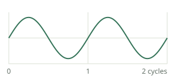
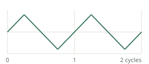
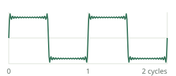
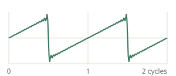
Making waveform selection differentiable
Now we can generate four waveforms, but how do we let a neural network choose between them?
Waveform selection is discrete: each oscillator must select one of four possibilities. A hard selection using argmax would prevent gradients from flowing back through the choice.
Instead, we can use a softmax-weighted combination of the four waveforms:
where z contains the predicted logits, p_k the selection probabilities, and x_k(t) the candidate waveforms.
From synth/oscillators/bank.py
# Keep the four candidate waveforms on a separate axis: [batch, 4, samples].
waves = torch.stack([osc(freq, time) for osc in self.oscillators], dim=1)
# selection: [batch, 4] -> [batch, 4, 1], sharing each weight across time.
# Sum the waveform axis to return [batch, samples].
return (selection.unsqueeze(-1) * waves).sum(dim=1)In the code, the order is sine, square, sawtooth, triangle. For example, weights of [1, 0, 0, 0] select a pure sine wave, while [0.5, 0.5, 0, 0] mix sine and square equally.
This makes selection differentiable, but introduces a mismatch: during training, the oscillator can blend several waveforms, while the final plugin uses a single discrete selection.
I also experimented with a straight-through estimator (STE), which uses a hard selection during the forward pass but approximates its gradients using the softmax.
# Turn four logits into probabilities, then make a one-hot hard choice.
probability = raw.softmax(dim=-1)
hard = torch.nn.functional.one_hot(probability.argmax(-1), 4).to(probability)
# The bracket is zero in the forward pass, but carries softmax gradients.
controls[name] = hard + (probability - probability.detach())While the STE better matches the behavior of the plugin, I found it considerably less stable during optimization. Soft selection generally worked better, so I kept it for training.
Detuning and mixing
Both oscillators start from the MIDI note's frequency, but the second can be detuned slightly. Detuning is measured in cents, with 100 cents per semitone and 1,200 per octave.
A detuning of c cents changes the frequency according to:
When two oscillators have slightly different frequencies, their interference creates a slow beating effect, making the sound feel richer and more animated.
The oscillator mix parameter then crossfades between them: zero selects only oscillator A, one selects only B, and 0.5 gives equal contributions.
From synth/synth.py, with explanatory comments
# Convert the cents offset to a frequency ratio for oscillator B.
freq_b = freq * 2 ** (detune_cents / 1200)
wave_b = self.oscillators(freq_b, time, oscillator_b)
# wave is oscillator A here; mix controls their relative contribution.
wave = (1 - mix) * wave + mix * wave_bFinally, white noise can be mixed into the oscillator signal before filtering.
ADSR envelope
So far, our oscillators generate continuous periodic signals. To turn these into musical notes, we need to control how their amplitude changes over time.
This is the job of the ADSR envelope: attack raises the amplitude, decay lowers it toward the sustain level, and release brings it back to zero after note-off.
Ava uses exponential curves for these transitions. We first define a function that maps progress through a stage, from zero to one, into a curved transition:
From synth/envelopes/adsr.py, with explanatory comments
def curve(self, progress):
# Before a stage starts, progress is 0; after it ends, progress is 1.
progress = progress.clamp(0, 1)
# self.curvature = 4.0. Normalize the exponential to run from 0 to 1.
curve = -torch.expm1(-self.curvature * progress) / -math.expm1(-self.curvature)
# Make completed transitions exactly 1, including in finite precision.
return torch.where(progress >= 1, torch.ones_like(curve), curve)The curvature is fixed at 4, giving a relatively fast initial transition that gradually slows toward its endpoint. At halfway through the stage, the curve has already completed about 88% of the transition.
We use this same curve for both attack and decay, changing its duration and amplitude range. During attack, the level rises from zero to one. During decay, it falls from one toward the sustain level.
From synth/envelopes/adsr.py, with explanatory comments
def held_level(self, time, attack, decay, sustain):
attack_level = self.curve(time / attack) # Progress through attack.
# Decay begins at time = attack, and drops by (1 - sustain).
decay_level = 1 - (1 - sustain) * self.curve((time - attack) / decay)
return torch.where(time < attack, attack_level, decay_level)Release requires a little more care. A note might end while the attack or decay is still in progress, so we can't assume that release always starts from the sustain level.
Instead, we evaluate the envelope at the exact note-off time and fade from that value to zero.
From synth/envelopes/adsr.py, with explanatory comments
# Amplitude while the key is held, evaluated at every audio sample.
held = self.held_level(time, attack, decay, sustain)
# Evaluate the same function at note-off, even if attack/decay is unfinished.
level_at_release = self.held_level(note_press_duration, attack, decay, sustain)
# Fade that level to zero over the release duration.
tail = level_at_release * (1 - self.curve((time - note_press_duration) / release))
return torch.where(time < note_press_duration, held, tail)This avoids discontinuities when releasing notes early, while keeping the envelope differentiable with respect to its parameters.
The MIDI input determines when the note starts and stops. The predicted envelope parameters determine how the amplitude evolves around those events.
Low-pass filter and LFO modulation
The filter was probably the most interesting, and challenging, component to implement.
Ava uses a second-order resonant low-pass filter, also called a biquad filter. It attenuates frequencies above a cutoff, while the resonance parameter Q controls the emphasis around that cutoff.
A filter, one sample at a time
Unlike the oscillators, a biquad filter is recursive: its output depends not only on the current and previous input samples, but also on previous output samples.
Let's call the input waveform x[n] and the filtered waveform y[n], where n identifies the audio sample.
The filter follows this equation:
The b_i coefficients weight the current and previous input samples. The coefficients a_1 and a_2 weight previous outputs, while a_0 scales the current output.
For example, x[n-1] is the input one sample ago, while y[n-2] is the filtered output two samples ago.
The coefficients determine the filter's behavior and are calculated from the cutoff frequency and resonance.
Calculating and applying the filter
In Ava, the cutoff follows the MIDI pitch, expressed as an octave offset from the note frequency. This helps preserve a similar filtering effect when playing different notes.
Given a cutoff frequency f_c, sample rate f_s, and resonance Q, we first calculate:
The low-pass filter coefficients are then:
We normalize all coefficients by a_0, so the recurrence can be written with a_0=1.
From synth/filters/lowpass.py, with explanatory comments
# Convert cutoff Hz to radians per sample.
omega = 2 * torch.pi * cutoff_hz / self.sample_rate
cosine = torch.cos(omega)
alpha = torch.sin(omega) / (2 * q)
# Pack [a0, a1, a2] and [b0, b1, b2] for each cutoff/Q pair.
a = torch.cat([1 + alpha, -2 * cosine, 1 - alpha], dim=-1)
b = torch.cat([(1 - cosine) / 2, 1 - cosine, (1 - cosine) / 2], dim=-1)
# Divide every coefficient by a0, so the new a0 is 1.
return a / a[:, :1], b / a[:, :1]When the cutoff and resonance remain constant, we only need to calculate these coefficients once. We can then apply the recursive filter using torchaudio.functional.lfilter.
From synth/filters/lowpass.py, with explanatory comments
# Compute one coefficient set per batch element from the fixed cutoff and Q.
batch = max(audio.shape[0], cutoff_hz.shape[0])
a, b = self.coefficients(cutoff_hz.expand(batch, 1), q.expand(batch, 1))
# lfilter evaluates the recurrence using these coefficients.
filtered = lfilter(audio.double().expand(batch, -1), a, b,
clamp=False, batching=True)
return filtered.to(audio.dtype)The interesting part is that PyTorch can still propagate gradients through the filtering operation, even though each output sample depends on previous outputs.
Adding LFO modulation
Now suppose we want the cutoff to move over time.
An LFO (low-frequency oscillator) adds a periodic modulation to the cutoff. Its rate determines how quickly the cutoff changes, while its depth controls how far it moves.
Since our cutoff is expressed in octaves relative to the MIDI pitch, we can write:
where o_{\mathrm{cutoff}} is the base cutoff offset, d the modulation depth in octaves, and r the LFO rate.
This means the filter coefficients are no longer constant: they need to change as the LFO moves the cutoff.
The Python synth defaults to coefficient updates at 200 Hz, once every 5 milliseconds. At 24 kHz, that corresponds to one update every 120 samples. The rate is configurable: for the datasets and audio-training experiments in this post, I used sample-wise updates at 24 kHz, as does the C++ plugin.
Between updates, the filter continues processing audio at the full sample rate using the current coefficients.
At each update, we calculate the modulated cutoff and convert it into a new set of filter coefficients:
Simplified from synth/synth.py and synth/filters/lowpass.py; batching omitted
# For one update time; the full implementation batches all update times.
offset = torch.as_tensor(cutoff_octaves, device=freq.device, dtype=torch.float64)
# Add the LFO's octave offset to the preset's base offset.
offset = offset + self.lfo(time, rate, depth)
cutoff_hz = freq.double() * 2 ** offset
# Recalculate a and b using exactly the same coefficient function as before.
a, b = self.lowpass.coefficients(cutoff_hz, q)torchaudio.functional.lfilter expects fixed coefficients for each signal. For the changing cutoff, Ava first expands each coefficient set over the samples where it applies. It computes the input-weighted part with vectorized PyTorch operations, then uses TorchLPC's sample_wise_lpc for the recursive part:
From synth/filters/lowpass.py, with the numerator split across lines
# a and b contain one coefficient set per sample: [batch, samples, 3].
padded = torch.nn.functional.pad(x, (2, 0))
numerator = (b[..., 0] * x
+ b[..., 1] * padded[:, 1:-1]
+ b[..., 2] * padded[:, :-2])
filtered = sample_wise_lpc(
numerator.contiguous(), a[..., 1:].contiguous())This is one filtering pass over the whole clip, so the filter's history continues across coefficient updates rather than restarting at each one.
The important part is that the complete process remains differentiable, allowing gradients to flow back through the filter coefficients to the cutoff, resonance, LFO rate, and depth.
Drive, gain, and putting everything together
The final components are relatively simple.
Drive adds harmonic distortion using a normalized tanh nonlinearity:
where d is the drive amount. At zero drive, the signal passes through unchanged.
The ADSR envelope then shapes the amplitude, while output gain and MIDI velocity control the final level.
With everything connected, our synthesizer is just a differentiable function mapping MIDI information and preset parameters to audio. We can render a sound, compute a loss, and backpropagate through the entire signal chain.
Of course, being differentiable doesn't guarantee that the parameters are easy to optimize. Different parameter combinations can produce similar sounds, and the loss landscape may contain local minima. That's what I wanted to investigate next.
3. Optimizing Synth Parameters Directly
Before training a neural network, I wanted to check whether the synth parameters could actually be recovered through gradient descent.
The experiment was simple: I chose a preset, generated a reference sound, and then tried to recover its parameters by minimizing the difference between the reference and reconstructed audio. I started by optimizing one parameter at a time, keeping the others fixed at their ground-truth values, before moving to multiple parameters.
For now, I used the mean squared error (MSE) between the two waveforms:
Here, x is the reference audio, S(\theta,m) is the reconstructed waveform, and T is the number of audio samples.
Why use MSE for audio?
Waveform MSE is generally not a great measure of perceptual similarity. It's particularly sensitive to phase: two signals can sound almost identical but have a large MSE if their waveforms are slightly misaligned.
For example, consider two sine waves with the same frequency and amplitude, but a 90-degree phase difference:
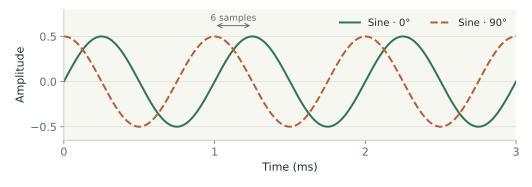
Sine · 0°
Sine · 90°
At 1 kHz and 24 kHz sample rate, this corresponds to a shift of just six samples. The waveform MSE is about 0.25, even though the two tones should sound identical when played separately.
Our case is a little different, though. Both sounds come from the same deterministic synthesizer, with identical MIDI inputs, oscillator starting phases, and noise realization. We therefore know that a parameter configuration producing exactly the same waveform exists.
This doesn't make optimization easy, but it makes MSE a reasonable starting point for testing whether the gradients are useful.
Recovering the parameters
The results were encouraging: for the tested preset, every parameter could be recovered in at least one run. However, convergence depended on the parameter and its initialization.
The following plots show three representative examples, each tested with different random seeds.
Gain
Target: 0.5
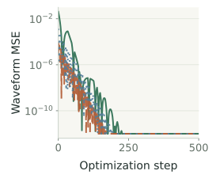
Recovered:
0.5 / 0.5 / 0.5
Detuning
Target: 12 cents
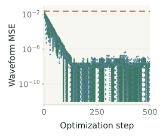
Recovered (cents):
12 / 15.592 / 12
LFO rate
Target: 2 Hz
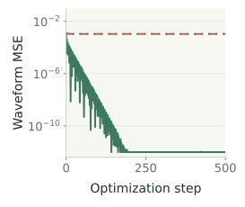
Recovered (Hz):
2 / 1.708 / 1.708
Gain was relatively easy to recover, with all three seed groups converging to the correct value of 0.5.
Detuning was harder. Two seed groups recovered the target of 12 cents, while the third got stuck around 15.6 cents.
The LFO rate was even more challenging: only one seed group recovered the correct 2 Hz, while the other two converged to approximately 1.708 Hz.
In fact, detuning and LFO rate were the only parameters that failed in the single-parameter tests; all the others were recovered across all three seed groups. A separate scan of the LFO-rate loss confirmed a local minimum around 1.708 Hz, explaining why optimization repeatedly got stuck there.
Things become even more complicated when optimizing several parameters together, since changing one parameter can sometimes compensate for changes in another.
I also compared soft waveform selection with the straight-through estimator introduced earlier. Soft selection was considerably easier to optimize, although the final saved presets still use discrete oscillator choices.
What did we learn?
These experiments confirmed that gradients through the synthesizer are useful, but also showed that differentiability doesn't guarantee successful optimization. Even when the target sound can be reproduced exactly, gradient descent can get stuck in local minima.
There's also an important distinction between recovering the original parameters and reproducing the original sound. Different parameter combinations can produce similar audio, so the two objectives aren't necessarily equivalent.
Rather than optimizing a new preset from scratch for every recording, the next step was to train a neural network to predict the parameters directly from audio.
4. Learning from Synthetic Audio
Before trying to reconstruct sounds from a text-to-audio model, I wanted to start with something simpler: can a neural network recover the parameters of sounds generated by our own synthesizer?
Since we control the synthesizer, we can generate as much training data as we need, with the original parameters available as ground truth. This also lets us train the network directly on the parameters, without the computational cost of rendering audio at every training step.
More importantly, it's a useful first experiment to see whether the audio representation contains enough information to recover the synth controls.
Generating and Encoding the Data
I generated 100,000 training examples, 10,000 validation examples, and 10,000 test examples, each using a randomly sampled preset. Pitches were sampled uniformly from MIDI 21–78, with fixed velocity. Each recording lasts six seconds at 24 kHz: four seconds with the key held, followed by two seconds for the release tail.
The parameters were sampled within predefined ranges, using log-uniform distributions for envelope times, resonance, and LFO rate, and linear-uniform distributions for the remaining continuous controls. I also balanced the 16 possible oscillator waveform combinations across the dataset.
Rather than training a model directly on raw waveforms, I decided to use a pretrained audio encoder to obtain more compact representations. Besides reducing the training cost, this would also let me reuse an existing text-to-audio generative model later on.
I initially experimented with EnCodec[2] and Music2Latent[3], before settling on SAME-S, the autoencoder used by Stable Audio 3 Small SFX[4]. These weren't controlled comparisons, but SAME-S had one particularly useful advantage: an available text-conditioned model that generates audio in the same latent space.
For our six-second recordings, SAME-S produces a sequence of 66 latent vectors, each containing 256 values. I encoded the dataset once using the frozen encoder and saved the latents alongside the original presets.
Original preset → 13 continuous targets + two waveform labels
The audio latents become the input to our prediction network, while the original preset parameters provide the supervision. MIDI information is stored for rendering, but isn't passed to the network.
I ran this entire stage, from data generation to supervised training, on my MacBook M1 Pro.
Predicting the Synth Parameters
For the prediction network, I used a small Transformer with around 440,000 parameters. It processes the sequence of audio latents and predicts 13 continuous controls and two discrete waveform selections.
The continuous outputs are bounded between 0 and 1 using sigmoid activations, then mapped to their actual parameter ranges by the synthesizer. For the two oscillators, the network predicts four logits each, corresponding to the available waveforms.
Training is straightforward: we use MSE for the normalized continuous parameters and cross-entropy for the waveform selections. The two losses are combined as:
where u_i and \hat{u}_i are the ground-truth and predicted normalized parameters. All continuous parameters are weighted equally, while the waveform classification term receives a weight of 0.01. Both loss terms are also averaged over the batch.
Notice that we don't need to render audio during training: we're simply learning to map audio latents to the parameters that originally generated them.
How Well Does It Work?
I trained the model for 200 epochs, using an exponential moving average (EMA) of the weights for evaluation, and selected the checkpoint with the lowest validation parameter MSE.
On the 10,000 test examples, the model reached a normalized parameter RMSE of 0.0488. Waveform classification accuracy was 92.7% for oscillator A and 93.2% for B, with both correctly predicted in 86.6% of the examples.
Interestingly, around 84% of waveform classification errors involved confusing sine and triangle waves.
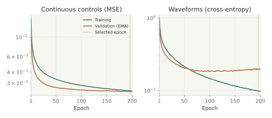
Not all parameters were equally easy to recover, as shown below.
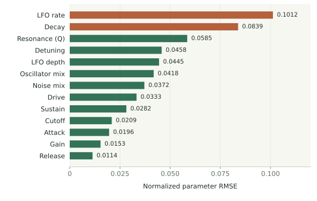
LFO rate and decay were the hardest parameters, while release, gain, attack, and cutoff were recovered more accurately. The detuning error, for example, corresponds to around 1.37 cents.
We can also inspect how predictions compare with their targets across the entire test set.
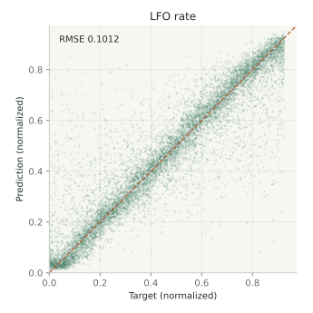
These results are encouraging, although it's difficult to tell how much of the remaining error comes from the audio representation, the prediction network, or the ambiguity of the parameters themselves.
For example, a high filter cutoff might have very little effect on a sound with almost no high-frequency content, making its exact value difficult to infer. This is one reason why recovering the original preset isn't necessarily the same as reproducing the sound accurately.
Listening to the Reconstructions
But how do these parameter errors translate into audio?
Below are four examples from the held-out test set, comparing the original sounds with reconstructions generated using the predicted parameters. Both versions use the same MIDI note and timing.
Example 1 · A0
Original
Predicted preset
Compare preset values
| Parameter | Original | Predicted |
|---|---|---|
| Oscillator A | Triangle | Triangle |
| Oscillator B | Square | Square |
| Gain | 0.338 | 0.345 |
| Mix | 0.592 | 0.572 |
| Detuning (cents) | 9.47 | 7.43 |
| Noise mix | 0.017 | 0.105 |
| Cutoff (octaves) | 1.63 | 2.02 |
| Resonance (Q) | 1.79 | 1.4 |
| LFO rate (Hz) | 1 | 1.18 |
| LFO depth (octaves) | 0.359 | 0.344 |
| Drive | 2.26 | 2.49 |
| Attack (s) | 0.192 | 0.196 |
| Decay (s) | 0.0773 | 0.0864 |
| Sustain | 0.833 | 0.822 |
| Release (s) | 0.623 | 0.642 |
Example 2 · D3
Original
Predicted preset
Compare preset values
| Parameter | Original | Predicted |
|---|---|---|
| Oscillator A | Sine | Sine |
| Oscillator B | Sawtooth | Sawtooth |
| Gain | 0.351 | 0.334 |
| Mix | 0.674 | 0.688 |
| Detuning (cents) | 19.3 | 18.9 |
| Noise mix | 0.12 | 0.133 |
| Cutoff (octaves) | 1.82 | 1.8 |
| Resonance (Q) | 1.52 | 1.36 |
| LFO rate (Hz) | 2.37 | 2.66 |
| LFO depth (octaves) | 0.632 | 0.632 |
| Drive | 2.35 | 2.96 |
| Attack (s) | 0.0226 | 0.0233 |
| Decay (s) | 0.161 | 0.303 |
| Sustain | 0.73 | 0.745 |
| Release (s) | 0.211 | 0.242 |
Example 3 · C5
Original
Predicted preset
Compare preset values
| Parameter | Original | Predicted |
|---|---|---|
| Oscillator A | Triangle | Triangle |
| Oscillator B | Triangle | Triangle |
| Gain | 0.286 | 0.238 |
| Mix | 0.748 | 0.729 |
| Detuning (cents) | 16.1 | 16.9 |
| Noise mix | 0.0343 | 0.0239 |
| Cutoff (octaves) | 2.06 | 2.06 |
| Resonance (Q) | 0.712 | 0.72 |
| LFO rate (Hz) | 1.23 | 1.2 |
| LFO depth (octaves) | 0.665 | 0.573 |
| Drive | 0.455 | 0.931 |
| Attack (s) | 0.0891 | 0.0782 |
| Decay (s) | 0.439 | 0.509 |
| Sustain | 0.667 | 0.744 |
| Release (s) | 0.143 | 0.128 |
Example 4 · F3
Original
Predicted preset
Compare preset values
| Parameter | Original | Predicted |
|---|---|---|
| Oscillator A | Sine | Sine |
| Oscillator B | Sawtooth | Sawtooth |
| Gain | 0.721 | 0.743 |
| Mix | 0.342 | 0.372 |
| Detuning (cents) | 24.1 | 23.1 |
| Noise mix | 0.159 | 0.122 |
| Cutoff (octaves) | 2.23 | 2.12 |
| Resonance (Q) | 0.63 | 0.69 |
| LFO rate (Hz) | 3.13 | 4.68 |
| LFO depth (octaves) | 0.119 | 0.237 |
| Drive | 3.98 | 3.24 |
| Attack (s) | 0.112 | 0.114 |
| Decay (s) | 0.741 | 0.872 |
| Sustain | 0.425 | 0.426 |
| Release (s) | 1.1 | 1.22 |
The reconstructions are generally close, although the parameter tables reveal some noticeable differences. In the fourth example, for instance, both oscillator waveforms are predicted correctly, but the LFO rate is estimated at 4.68 Hz instead of 3.13 Hz.
Overall, this experiment suggests that the pretrained audio representation contains enough information to recover the synth controls reasonably well. But direct parameter supervision is only possible because we generated the data ourselves.
For sounds produced by an external model, we won't know the original parameters. Instead, we'll need to train the network based on how closely the synthesizer reproduces the target audio.
5. Training with an Audio Loss
So far, we've trained the network to recover the original synth parameters. But if we want to reconstruct sounds that weren't generated by Ava, we won't have any ground-truth parameters to supervise the model with.
Instead, we need to train it by comparing the audio produced by the predicted preset with the target recording.
I first tested this on our synthetic dataset, where we know that an exact reconstruction is possible. This lets us evaluate audio-loss training in a controlled setting before moving to text-generated sounds.
Moving to a Spectral Loss
As we saw earlier, waveform MSE is very sensitive to phase and temporal alignment. For reconstructing arbitrary audio, comparing sounds in the frequency domain is often more useful.
The short-time Fourier transform (STFT) splits a waveform into overlapping windows and measures its frequency content over time. By comparing the magnitudes of these spectrograms, we become less sensitive to phase differences while retaining information about how the sound evolves.
The window size introduces a trade-off: short windows capture transients more precisely, while longer windows provide better frequency resolution, which is particularly useful for distinguishing nearby frequencies. A multi-resolution STFT loss combines both.
The figure below illustrates this using a square wave and a copy shifted by a quarter-cycle.
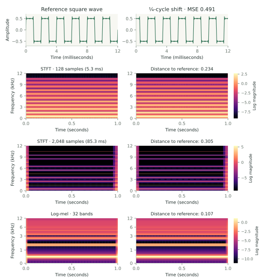
The waveforms differ substantially, even though their harmonic structure is the same. The spectral representations show much more similar harmonic patterns, particularly with longer windows. The losses aren't completely phase-invariant because of finite windows and clip boundaries.
For training, I used auraloss[5], which combines two measures: spectral convergence, measuring the relative difference between magnitude spectrograms, and the L1 distance between their log magnitudes.
Here, A_r and \hat A_r are the target and reconstructed STFT magnitudes at resolution r. The logarithm gives quieter frequency components more influence, while a small magnitude floor prevents numerical issues.
After experimenting with different losses on a small synthetic subset, I settled on a multi-resolution STFT loss with relatively long windows, combined with a log-mel loss.
The latter groups frequencies into perceptually motivated bands using mel filterbanks:
We then compare the log-mel representations of the target and reconstruction, averaging over K resolutions:
The final objective combines the two losses with equal weight:
Importantly, this is the only training objective. We still log waveform MSE and parameter errors for evaluation, but don't use them to compute gradients.
Training Through the Synth
Training with an audio loss is considerably more expensive, since every forward pass now requires rendering audio through the differentiable synthesizer. For these experiments, I moved from my MacBook to NVIDIA A100 40 GB GPUs.
I compared two approaches: training the same 440k-parameter Transformer from scratch, or initializing it with the weights obtained from parameter-space pretraining.
Both models were trained on the same 100,000 synthetic sounds, using AdamW with a learning rate of 10^{-3}, batch size 128, and 50 epochs. Each run took about 16 hours, including validation.
The network still predicts all 13 continuous controls and both oscillator selections. During training, waveform selection uses soft mixtures to allow gradients to flow. For validation and testing, we use discrete oscillator choices and EMA weights, matching the final preset behavior.
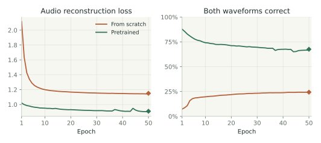
On the 10,000 held-out test sounds, the model trained from scratch achieved an audio loss of 1.150, compared with 0.910 for the fine-tuned model: roughly a 21% improvement from pretraining.
Interestingly, the two models recovered both original oscillator waveforms correctly in only 24.3% and 67.6% of examples, respectively. Waveform classification accuracy also declined during fine-tuning, even as reconstruction loss improved.
This highlights an important distinction: the parameters that best reproduce a sound aren't necessarily the ones that originally generated it. Since our objective is audio reconstruction, the network is free to find alternative presets that produce similar results.
We can also listen to the difference. Below are two held-out examples, comparing the original recording, the parameter-pretrained model before fine-tuning, and both models trained with the audio loss.
C5
Original
Pretrained (before fine-tuning)
From scratch
Fine-tuned
F3
Original
Pretrained (before fine-tuning)
From scratch
Fine-tuned
To my ears, the fine-tuned reconstructions sound a little closer to the originals, which is consistent with the lower audio loss.
Overall, these results suggest that parameter-space pretraining provides a useful starting point for audio reconstruction, at least in this synthetic setting and within the training budget tested. The next challenge is to move beyond sounds generated by our own synthesizer.
6. From Text to Synth Presets
So far, we've only trained on sounds generated by Ava itself. But to build a text-to-synth system, we need to learn from a wider variety of sounds, including those our synthesizer might not be able to reproduce exactly.
Rather than collecting recordings and descriptions by hand, I decided to use a pretrained text-to-audio model to generate the training data.
Generating Audio from Text
I used Stable Audio 3 Small SFX[4], a text-conditioned latent diffusion model operating in the SAME-S latent space. Starting from random noise, it generates an audio latent in just eight sampling steps. We can then feed this latent directly to our parameter prediction network, or decode it into audio to use as a reconstruction target.
Since the generator would eventually run locally in the plugin, I also quantized its weights to reduce memory usage. Specifically, the linear layers of the text encoder and latent generator use INT8 weights, while the remaining operations stay in floating point.
Importantly, I used the same quantized models and eight-step sampler for both data generation and deployment, so the prediction network learns from the same type of latents it will receive in the final plugin.
For the dataset, I started with eight instrument families: bass, piano, guitar, trumpet, flute, strings, synth lead, and pad. I wrote a collection of descriptions for each family and combined them with optional timbre modifiers and notes sampled from the corresponding instrument's range.
Here are four examples from the test set:
- Guitar · D♯4: "a fuzzy garage guitar with a thick buzzing tone, hollow and woody."
- Piano · E3: "a rounded vintage electric piano with a gentle buzz, hollow and woody."
- Trumpet · A♯3: "a dark mellow muted trumpet, thin and delicate."
- Synth Lead · C4: "a gritty distorted rave lead with a sharp biting sound, warm and fuzzy."
Each description is placed inside a prompt template that specifies the instrument, pitch, and desired recording characteristics. For example:
A single isolated guitar-inspired subtractive synthesizer note at D#4 (MIDI 63, 311.13 Hz). Desired timbre: a fuzzy garage guitar with a thick buzzing tone, hollow and woody. Dry and monophonic, triggered once, within a 6-second clip.
This encourages the model to generate isolated, dry, monophonic sounds rather than complete musical passages. Full prompts are unique across the dataset splits, although individual descriptions and modifiers can be reused.
I generated 10,000 training examples, along with 1,000 validation and 1,000 test examples.
Pitch and Note Timing
There's still one problem: even when we ask the generative model to produce a specific note, it doesn't always get the pitch right.
To check this, I used CREPE[6], through torchcrepe, to estimate the fundamental frequency of each generated recording. After excluding quiet sections and unreliable predictions, I kept sounds whose estimated pitch stayed close to the requested note.
For accepted recordings, the synthesizer uses the median detected frequency directly in hertz, without rounding it to the nearest MIDI note.
When a sample fails the pitch check, I regenerate it with a different random seed. After 20 unsuccessful attempts, I replace the prompt entirely.
I also kept the synth's note timing fixed: note-on at the beginning of the six-second clip and note-off after four seconds. This is a simplification, since the generated audio doesn't necessarily follow those timings. A better approach would be to include note duration in the prompt and estimate the actual onset and release.
One important distinction: CREPE is only used to prepare the training dataset. In the final plugin, pitch, velocity, and note timing come directly from MIDI, so neither pitch estimation nor audio decoding is needed to play the generated presets.
Training the Parameter Mapper
With the dataset ready, we can finally train the text-to-synth model.
Each example contains the generated latent, its decoded audio, and the corresponding pitch and note timing. The prediction network receives the original SAME-S latent directly, without additional encoding or normalization.
As in the previous experiment, it predicts the synthesizer parameters, renders the corresponding audio through our differentiable synth, and minimizes the STFT and log-mel reconstruction losses against the decoded reference.
There are no ground-truth synth parameters this time. The network simply learns to find the preset that best approximates each generated sound.
Does Pretraining Help?
In the previous experiment, initializing the network with parameter-pretrained weights improved audio reconstruction on synthetic sounds. But will that still help here?
The text-generated sounds are much more varied, and many of them can't be reproduced exactly by Ava. Pretraining might provide a useful starting point, but it could also bias the network towards the distribution of randomly generated synth presets.
To investigate this, I compared training from scratch with fine-tuning from the parameter-pretrained model, using two learning rates: 10^{-3} and 10^{-4}.
All four runs used the same 440k-parameter Transformer, AdamW optimizer, batch size of 128, and 200 training epochs. Each took approximately 5.5–6.2 hours on an NVIDIA A100 40 GB GPU.
I selected checkpoints based on validation loss and evaluated them on the same 1,000 held-out test sounds.
| Initialization | Learning rate | Selected epoch | Test audio loss |
|---|---|---|---|
| Fine-tuned | 10^{-3} | 83 | 1.912 |
| From scratch | 10^{-3} | 197 | 1.888 |
| Fine-tuned | 10^{-4} | 156 | 1.901 |
| From scratch | 10^{-4} | 198 | 1.918 |
The best model trained from scratch achieved a test audio loss of 1.888, compared with 1.901 for the best fine-tuned model, a difference of less than 1%.
Pretraining helped at the lower learning rate, but not at the higher one. The differences are small, and with only one seed per configuration, it's difficult to draw strong conclusions. Still, pretraining seems to offer less of an advantage here than it did when reconstructing our synthetic data.
Of course, numerical losses only tell us so much. What really matters is how the resulting presets sound.
7. Results: Let's Have a Listen!
Enough about training and losses. Let's finally hear what Ava can do!
Pick an instrument below to compare the audio generated from a text description with Ava's attempt to recreate it. All reconstructions in the main gallery use the best model trained from scratch.
Loading the sounds…
These are held-out test examples, selected for variety rather than reconstruction quality. The reference audio was decoded from the saved latents, and the recordings haven't been loudness-matched.
Comparing Training Strategies
We can also hear how the two training strategies compare. Below are four examples showing the original generated sound alongside reconstructions from the best fine-tuned and scratch-trained models.
Guitar · D♯4
“a fuzzy garage guitar with a thick buzzing tone, hollow and woody.”
Generated audio
Fine-tuned
From scratch
Piano · D♯5
“a warm lo-fi piano with a soft muted touch, gently swelling.”
Generated audio
Fine-tuned
From scratch
Trumpet · A♯3
“a dark mellow muted trumpet, thin and delicate.”
Generated audio
Fine-tuned
From scratch
Flute · G♯4
“a clear bright concert flute with a smooth flowing tone, gently wavering.”
Generated audio
Fine-tuned
From scratch
The fine-tuned model uses a learning rate of 10^{-4}, while the scratch model uses 10^{-3}. Both use discrete oscillator selections. The piano reference was re-decoded from its saved test latent, and the recordings haven't been loudness-matched.
Where Things Go Off Track
Some sounds work considerably better than others, and the problems don't always come from Ava.
For example, the text-to-audio model sometimes generates sounds that don't quite match the prompt. To my ears, the guitars and pianos often sound surprisingly similar, and one of the bamboo flute examples even slipped through the pitch check with an incorrect note. Better prompts and more reliable data generation would already help.
On the reconstruction side, Ava seems to struggle particularly with plucky sounds, complex distortion, and evolving dynamics. Some of this is probably due to the limited expressiveness of the synthesizer, but our earlier experiments also showed that optimization can be difficult even when the synth is capable of reproducing the target.
Still, several of the bass, piano, flute, and trumpet examples sound pretty convincing to me. And even when the reconstruction isn't particularly faithful, the resulting preset can be interesting in its own right.
Play and Tweak the Presets
And that's probably my favorite part of the project: these aren't just generated audio samples, but actual synthesizer presets.
Try loading an example from the gallery, playing it at a different pitch, or adjusting a few parameters to see how the sound changes.
01 SOURCE
02 FILTER + MOTION
03 AMPLITUDE ENVELOPE
04 OUTPUT
Loading the presets…
The browser demo uses the C++ synthesizer compiled to WebAssembly, with presets generated in advance. Click Enable audio to start playing. Text generation is only available in the desktop plugin, where you can enter your own descriptions and generate new presets.
8. Bringing Ava to C++
The final step was bringing everything together in a working plugin.
I had already started a C++ synthesizer back in 2024, but it needed updating to match the PyTorch implementation. I kept the audio engine independent of JUCE, which handles the plugin interface and MIDI integration.
Unlike the PyTorch version, which renders complete audio clips in batches, the C++ synth needs to generate audio continuously, preserving oscillator phases, envelopes, and filter states between buffers. To check that both implementations behaved consistently, I compared six-second recordings and tested note timing and continuity across audio buffers. The same C++ engine also powers the browser demo above.
For inference, I exported the neural networks to ONNX and used ONNX Runtime to run everything locally on the CPU. The text encoder and latent generator use the INT8 versions introduced earlier, while the smaller parameter prediction network converts the generated latent into a preset. No Python runtime, external service, audio decoder, or pitch estimator is needed.
To avoid interrupting audio playback, text generation runs in a separate helper process and the parameter mapper runs on a background thread. Once the preset is ready, it behaves like any regular synth patch: you can play it through MIDI and adjust every parameter manually.
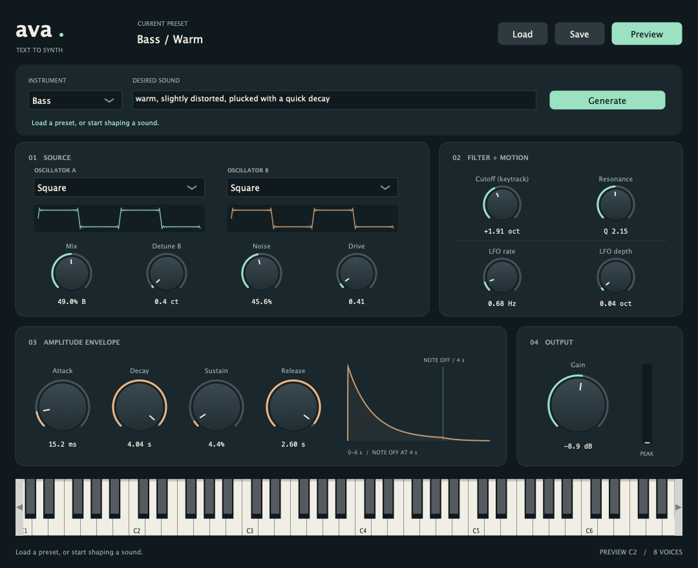
The plugin currently supports Apple Silicon Macs (sorry, Windows users!), with Audio Unit, VST3, and standalone versions.
Both the PyTorch synthesizer and training code and the C++ plugin are available on GitHub, along with the trained mapper weights. You can find build and installation instructions in the C++ repository.
9. Conclusions
So, did it work? Well, sort of!
Some sounds came surprisingly close to the reference, while others were considerably less convincing. Still, I'm quite happy with what Ava can already do, especially considering how simple the synthesizer is.
There's plenty of room for improvement. The most obvious direction is to make the synth more expressive, with additional oscillators, effects, and more flexible modulation. But the synth itself isn't the only limitation. Our experiments showed that some parameters were difficult to optimize even when an exact match was possible, suggesting that better losses, training strategies, and models could also improve the results. And, of course, more reliable text-to-audio generation would help us start with better training data.
Beyond the results, this was a really fun project. I got to combine two things I've been interested in for a long time, music production and generative modeling, and learned quite a bit about both along the way.
Ava hasn't quite solved the endless preset-scrolling problem that originally motivated the project. But having something that can turn a sound description into a playable, editable synth preset feels like a pretty good start.
Afterword: A Note on Using LLMs
I started this project in 2024, when coding assistants weren't nearly as capable as they are today. Back then, I built the C++ synthesizer myself, following The Audio Programmer's book, with a few modifications and a rather ugly interface. I also implemented a way to load an audio sample and predict its synth parameters using a PyTorch model, and wrote most of the differentiable synthesizer and training pipeline. I eventually stopped while working on the low-pass filter and LFO, and the project sat unfinished for almost two years.
When I picked it up again in 2026, things had changed quite a bit. I relied heavily on Codex to finish the PyTorch synth, run experiments and ablations, and help analyze the results. Once I was happy with the implementation, I went through the Python code file by file, refactoring and reviewing everything before moving on.
I was a little less rigorous with the C++ side, delegating much of the interface, integration, and installation work to Codex. I still tested the plugin myself, going through several iterations to identify and fix bugs.
I also used ChatGPT to help write this post. I started with a rough draft, focusing on what I wanted to say rather than polished English, and worked through it section by section to improve the writing and structure. I also used Codex to help create the diagrams and visualizations.
Overall, these tools made it much easier to revisit an old project, experiment with different ideas, and finally bring everything together. They didn't replace the need to understand the code, evaluate the experiments, or make design decisions, but they certainly made the process faster and more enjoyable.
References
- Benjamin Elizalde, Soham Deshmukh, Mahmoud Al Ismail and Huaming Wang. CLAP: Learning Audio Concepts From Natural Language Supervision. arXiv:2206.04769, 2022.
- Alexandre Défossez et al. High Fidelity Neural Audio Compression. 2022.
- Marco Pasini, Stefan Lattner and George Fazekas. Music2Latent: Consistency Autoencoders for Latent Audio Compression. 2024.
- Zach Evans et al. Stable Audio 3. 2026.
- Christian J. Steinmetz and Joshua D. Reiss. auraloss: Audio focused loss functions in PyTorch. DMRN+15, 2020.
- torchcrepe. PyTorch implementation of the CREPE pitch tracker. GitHub repository.